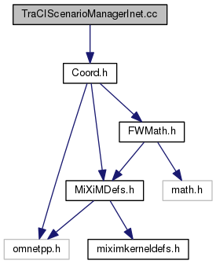
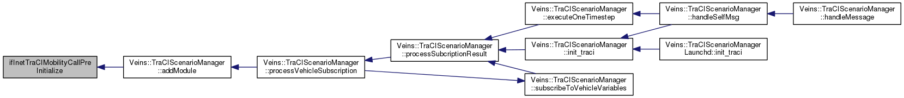

TraCIScenarioManagerInet.cc File Reference
#include "Coord.h"
Include dependency graph for TraCIScenarioManagerInet.cc:

Functions | |
| void | ifInetTraCIMobilityCallPreInitialize (cModule *mod, const std::string &nodeId, const Coord &position, const std::string &road_id, double speed, double angle) |
| void | ifInetTraCIMobilityCallNextPosition (cModule *mod, const Coord &p, const std::string &edge, double speed, double angle) |
Function Documentation
| void ifInetTraCIMobilityCallNextPosition | ( | cModule * | mod, |
| const Coord & | p, | ||
| const std::string & | edge, | ||
| double | speed, | ||
| double | angle | ||
| ) |
Referenced by Veins::TraCIScenarioManager::processVehicleSubscription().
Here is the caller graph for this function:

| void ifInetTraCIMobilityCallPreInitialize | ( | cModule * | mod, |
| const std::string & | nodeId, | ||
| const Coord & | position, | ||
| const std::string & | road_id, | ||
| double | speed, | ||
| double | angle | ||
| ) |
Referenced by Veins::TraCIScenarioManager::addModule().
Here is the caller graph for this function:
